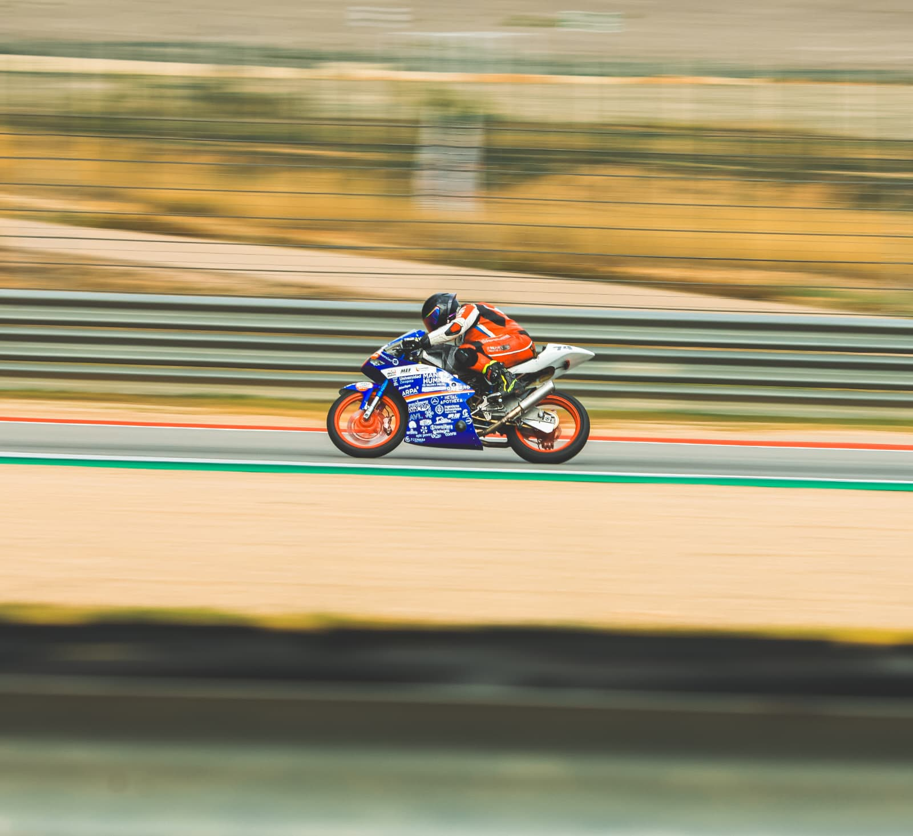
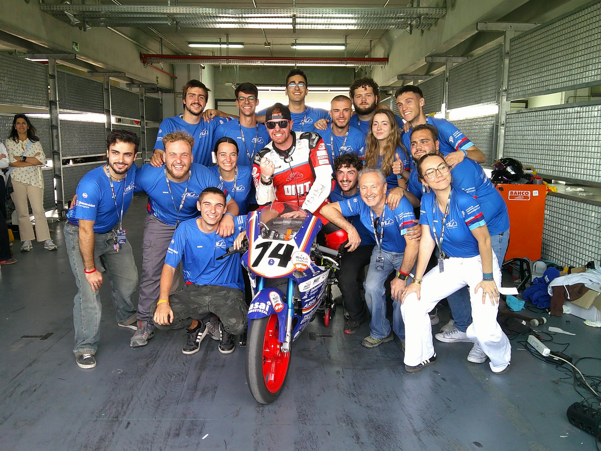

MSc Motorsport EngineeringMáster en Ingeniería de Competición
Campos Racing & Florida Universitaria, Valencia
Thesis: “Study, revision and expansion of balance metrics.”TFM: «Estudio, revisión y ampliación de métricas de balance».
Mechanical engineer starting out in motorsport, focused on vehicle dynamics and CAD design. I enjoy taking parts from CAD to the track, and I’m eager to keep learning from every team I work with. Ingeniero mecánico dando mis primeros pasos en motorsport, centrado en dinámica vehicular y diseño CAD. Disfruto llevando piezas del CAD a la pista y tengo muchas ganas de seguir aprendiendo de cada equipo con el que trabajo.

2024-present2024-actualidadPresident, Head of Dynamics, Structural and Powertrain departments.Presidente, Head of Dynamics, departamentos de Estructuras y Powertrain.

University of Zaragoza team that designs, builds and races two motorcycles, a petrol and an electric one, at MotorLand Aragón.
Equipo de la Universidad de Zaragoza que diseña, fabrica y compite con dos motos, una de combustión y una eléctrica, en MotorLand Aragón.
As Head of Dynamics I defined the suspension geometry of both bikes, and I was responsible for the full-vehicle CAD assembly of both. I also designed structural and powertrain parts and composite moulds, and helped build them in the workshop. At the competition I worked in the petrol bike’s box, and we finished 7th.
Como Head of Dynamics definí la geometría de suspensión de las dos motos y fui el responsable del ensamblaje CAD completo de ambas. También diseñé piezas estructurales y de transmisión y moldes de composite, y ayudé a fabricarlos en el taller. En la competición fui mecánico del box de la moto de combustión, con la que quedamos 7º.
President of the team: marketing, contact with collaborators and partners, and administrative management.Presidente del equipo: marketing, contacto con colaboradores y patrocinadores, y gestión administrativa.
Responsible for the complete assembly of both bikes: integrating every department’s parts and checking packaging and clearances.Responsable del ensamblaje completo de las dos motos: integrar las piezas de todos los departamentos y comprobar espacios y holguras.
Rear suspension geometry of the petrol and electric bikes, the base of my Bachelor’s thesis.Geometría de la suspensión trasera de la moto de combustión y la eléctrica, base de mi TFG.
Structural and powertrain parts, composite moulds and welding jigs, built and fitted together with the team.Piezas estructurales y de transmisión, moldes de composite y utillajes de soldadura, fabricados y montados junto al equipo.
Box mechanic for the petrol bike at the competition, where we finished 7th.Mecánico del box de la moto de combustión en la competición, donde quedamos 7º.
2025-2026Intern, CAD design and instrumentation, working for the F2, F3 and Eurocup3 teams.Prácticas en diseño CAD e instrumentación, dando servicio a los equipos de F2, F3 y Eurocup3.
2026-present2026-actualidadTrackside support in GT racing.Soporte en pista en carreras de GT.
GT-CET GPX and Global class champions, 12H SpaCampeones GT-CET GPX y clase Global, 12H Spa
Tyre pressures, fuel consumption and car vitals across race weekends.Presiones de neumáticos, consumo y parámetros del coche durante los fines de semana de carrera.
Data extraction and analysis after each session.Extracción y análisis de datos tras cada sesión.
Radio communication with the drivers in qualifying and races.Comunicación por radio con los pilotos en clasificación y carrera.
Refuelling hose operator during the pit stops, and engineering work outside the race sessions.Operario de la manguera en los repostajes durante las paradas, y trabajo de ingeniero fuera de las sesiones de carrera.
Things I design and build on my own time.Cosas que diseño y construyo por mi cuenta.
Campos Racing & Florida Universitaria, Valencia
Thesis: “Study, revision and expansion of balance metrics.”TFM: «Estudio, revisión y ampliación de métricas de balance».
University of ZaragozaUniversidad de Zaragoza
Thesis: “Design of a progressive suspension system, swingarm and other components for an electric racing motorcycle (Motostudent VIII).”TFG: «Diseño de un sistema de suspensión progresiva, basculante y otros componentes para una moto eléctrica de competición (Motostudent VIII)».